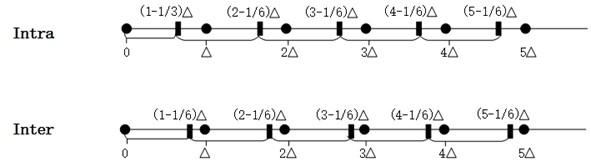
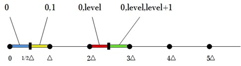
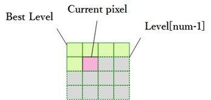

如上一篇Quantization所说，可以在编码端通过设置offset来调整量化后的值，从而趋向于期望的量化值，而且在逆量化公式可以看出offset值在逆量化的时候是不会用到的。
目前来说，确定offset的算法有三种：static offset、around offset、trellis offset。
Static Offset
H.264参考模型建议：当帧内预测时：$f = \frac{1}{3}\bigtriangleup$;当帧间预测时$f = \frac{1}{6}\bigtriangleup$。这种采用固定的比例作为量化的offset。
Around Offset
量化的时候加上Offset，目的是为了通过Offset的调整，使量化能趋向于得到最优结果。那么如何才是最优？当然是对量化后level进行反量化后，得到的数值与量化前的数值保持一致。当然这是不可能的，不过我们可以对第i次的量化结果，反馈到第i+1次量化计算中。通过这种自行反馈的方式，调整量化offset，使其趋向于最优的量化结果。
Around Offset会采用当前位置的上一次量化结果对这次的量化offset进行调整。
$ M_{i+1} = M_i + weight \times ((coeff_i – level_i << Qbits_i) >> (Qbits_i + 1))$
$ f_{i+1} = M_{i+1} << Qbits_{i+1}$

 //Q_offsets.c//fi+1 = Mi+1 << Qbitsi+1staticinlinevoidupdate_q_offset4x4(LevelQuantParams **q_params,short*offsetList,intq_bits)
{inti, j;short*p_list = &offsetList[0];for(j =0; j <4; j++)
{for(i =0; i <4; i++)
{
q_params[j][i].OffsetComp= (int) *p_list++ <
//Q_offsets.c//fi+1 = Mi+1 << Qbitsi+1staticinlinevoidupdate_q_offset4x4(LevelQuantParams **q_params,short*offsetList,intq_bits)
{inti, j;short*p_list = &offsetList[0];for(j =0; j <4; j++)
{for(i =0; i <4; i++)
{
q_params[j][i].OffsetComp= (int) *p_list++ < p_Vid->AdaptRndWeight = p_Inp->AdaptRndWFactor [p_Vid->nal_reference_idc !=0][img_type];
p_Vid->AdaptRndCrWeight = p_Inp->AdaptRndCrWFactor[p_Vid->nal_reference_idc !=0][img_type];if(img_type ==I_SLICE )
{for(qp =0; qp < max_qp +1; qp++)
{
k= p_Quant->qp_per_matrix [qp];
qp_per= Q_BITS + k -OffsetBits;
k= p_Inp->AdaptRoundingFixed ?0: qp;//Intra4x4 lumaupdate_q_offset4x4(p_Quant->q_params_4x4[0][1][qp], p_Quant->OffsetList4x4[k][0], qp_per);//Intra4x4 chroma uupdate_q_offset4x4(p_Quant->q_params_4x4[1][1][qp], p_Quant->OffsetList4x4[k][1], qp_per);//Intra4x4 chroma vupdate_q_offset4x4(p_Quant->q_params_4x4[2][1][qp], p_Quant->OffsetList4x4[k][2], qp_per);
}
}elseif(img_type ==B_SLICE)
{for(qp =0; qp < max_qp +1; qp++)
{
k= p_Quant->qp_per_matrix [qp];
qp_per= Q_BITS + k -OffsetBits;
k= p_Inp->AdaptRoundingFixed ?0: qp;//Inter4x4 lumaupdate_q_offset4x4(p_Quant->q_params_4x4[0][0][qp], p_Quant->OffsetList4x4[k][12], qp_per);//Intra4x4 lumaupdate_q_offset4x4(p_Quant->q_params_4x4[0][1][qp], p_Quant->OffsetList4x4[k][6], qp_per);//Inter4x4 chroma uupdate_q_offset4x4(p_Quant->q_params_4x4[1][0][qp], p_Quant->OffsetList4x4[k][13], qp_per);//Intra4x4 chroma uupdate_q_offset4x4(p_Quant->q_params_4x4[1][1][qp], p_Quant->OffsetList4x4[k][7], qp_per);//Inter4x4 chroma vupdate_q_offset4x4(p_Quant->q_params_4x4[2][0][qp], p_Quant->OffsetList4x4[k][14], qp_per);//Intra4x4 chroma vupdate_q_offset4x4(p_Quant->q_params_4x4[2][1][qp], p_Quant->OffsetList4x4[k][8], qp_per);
}
}else{for(qp =0; qp < max_qp +1; qp++)
{
k= p_Quant->qp_per_matrix [qp];
qp_per= Q_BITS + k -OffsetBits;
k= p_Inp->AdaptRoundingFixed ?0: qp;//Inter4x4 lumaupdate_q_offset4x4(p_Quant->q_params_4x4[0][0][qp], p_Quant->OffsetList4x4[k][9], qp_per);//Intra4x4 lumaupdate_q_offset4x4(p_Quant->q_params_4x4[0][1][qp], p_Quant->OffsetList4x4[k][3], qp_per);//Inter4x4 chroma uupdate_q_offset4x4(p_Quant->q_params_4x4[1][0][qp], p_Quant->OffsetList4x4[k][10], qp_per);//Intra4x4 chroma uupdate_q_offset4x4(p_Quant->q_params_4x4[1][1][qp], p_Quant->OffsetList4x4[k][4], qp_per);//Inter4x4 chroma vupdate_q_offset4x4(p_Quant->q_params_4x4[2][0][qp], p_Quant->OffsetList4x4[k][11], qp_per);//Intra4x4 chroma vupdate_q_offset4x4(p_Quant->q_params_4x4[2][1][qp], p_Quant->OffsetList4x4[k][5], qp_per);
}
}
}//Q_around.c//Mi+1 = Mi + k/*!
- \brief
- update rounding offsets based on JVT-N011
*************************************************************************/voidupdate_offset_params(Macroblock currMB,intmode,byteluma_transform_size_8x8_flag)
{
VideoParametersp_Vid = currMB->p_Vid;
InputParametersp_Inp = currMB->p_Inp;intis_inter = (mode != I4MB)&&(mode != I16MB) && (mode !=I8MB);intluma_pos = AdaptRndPos[(is_inter<<1) + luma_transform_size_8x8_flag][p_Vid->type];inti,j;intqp = currMB->qp + p_Vid->bitdepth_luma_qp_scale;intcur_qp = p_Inp->AdaptRoundingFixed ?0: qp;inttemp =0;
QuantParametersp_Quant = p_Vid->p_Quant;intoffsetRange =1<< (OffsetBits -1);intblk_mask =0x03+ (luma_transform_size_8x8_flag<<2);intblk_shift =2+luma_transform_size_8x8_flag;shortoffsetList = luma_transform_size_8x8_flag ? p_Quant->OffsetList8x8[cur_qp] : p_Quant->OffsetList4x4[cur_qp];short*cur_offset_list =offsetList[luma_pos];intfAdjust = luma_transform_size_8x8_flag ? p_Vid->ARCofAdj8x8[0][mode] : p_Vid->ARCofAdj4x4[0][mode];if(mode == IPCM)return;if( (p_Vid->active_sps->chroma_format_idc == YUV444) && (p_Inp->separate_colour_plane_flag !=0) )
{if( luma_transform_size_8x8_flag )//8x8luma_pos +=5* p_Vid->colour_plane_id;else//4x4luma_pos += p_Vid->colour_plane_id;
cur_offset_list=offsetList[luma_pos];
}for(j=0; j < MB_BLOCK_SIZE; j++)
{intj_pos = ((j & blk_mask)<<blk_shift);for(i=0; i < MB_BLOCK_SIZE; i++)
{
temp= j_pos + (i &blk_mask);
cur_offset_list[temp]= (short) iClip3(0, offsetRange, cur_offset_list[temp] + (short) fAdjust[j][i]);
}
}if(p_Vid->P444_joined)
{int*fAdjustCbCr;intuv;for(uv =0; uv <2; uv++)
{
luma_pos= AdaptRndPos[(is_inter<<1) + luma_transform_size_8x8_flag][p_Vid->type];
fAdjustCbCr= luma_transform_size_8x8_flag ? p_Vid->ARCofAdj8x8[uv +1][mode] : p_Vid->ARCofAdj4x4[uv +1][mode];if(luma_transform_size_8x8_flag )//8x8luma_pos +=5 (uv+1);else//4x4luma_pos += (uv+1);
cur_offset_list=offsetList[luma_pos];for(j=0; j < MB_BLOCK_SIZE; j++)
{intj_pos = ((j & blk_mask)<<blk_shift);for(i=0; i < MB_BLOCK_SIZE; i++)
{
temp= j_pos + (i &blk_mask);
cur_offset_list[temp]= (short) iClip3(0, offsetRange, cur_offset_list[temp] + (short) fAdjustCbCr[j][i]);
}
}
}
}if((p_Inp->AdaptRndChroma) && (p_Vid->yuv_format == YUV420 || p_Vid->yuv_format ==YUV422 ))
{intu_pos = AdaptRndCrPos[is_inter][p_Vid->type];intv_pos = u_pos +1;intk, jpos, uv =1;for(k = u_pos; k <= v_pos; k++)
{int*fAdjustChroma = (luma_transform_size_8x8_flag && mode == P8x8 )? p_Vid->ARCofAdj4x4[uv][4] : p_Vid->ARCofAdj4x4[uv][mode];
uv++;
cur_offset_list= p_Quant->OffsetList4x4[cur_qp][k];for(j =0; j < p_Vid->mb_cr_size_y; j++)
{
jpos= ((j &0x03)<<2);for(i =0; i < p_Vid->mb_cr_size_x; i++)
{
temp= jpos + (i &0x03);
cur_offset_list[temp]= (short) iClip3(0, offsetRange, cur_offset_list[temp] + (short) fAdjustChroma[j][i]);
}
}
}
}
}//Quant4x4_around.c//k = weight * ((coeff - level<<Qbits) >> Qbits+1)/!
\brief
Quantization process for All coefficients for a 4x4 block
*************************************************************************/intquant_4x4_around(Macroblock currMB,int**tblock,structquant_methods q_method)
{
VideoParametersp_Vid = currMB->p_Vid;
QuantParametersp_Quant = p_Vid->p_Quant;
SlicecurrSlice = currMB->p_Slice;
Boolean is_cavlc= (Boolean) (currSlice->symbol_mode ==CAVLC);intAdaptRndWeight = p_Vid->AdaptRndWeight;intblock_x = q_method->block_x;intqp = q_method->qp;int ACL = &q_method->ACLevel[0];int* ACR = &q_method->ACRun[0];
LevelQuantParams*q_params_4x4 = q_method->q_params;constbyte(pos_scan)[2] = q_method->pos_scan;constbytec_cost = q_method->c_cost;intcoeff_cost = q_method->coeff_cost;LevelQuantParamsq_params =NULL;int**fadjust4x4 = q_method->fadjust;inti,j, coeff_ctr;intm7;intscaled_coeff;intlevel, run =0;intnonzero =FALSE;intqp_per = p_Quant->qp_per_matrix[qp];intq_bits = Q_BITS +qp_per;constbytep_scan = &pos_scan[0][0];intpadjust4x4;//Quantizationfor(coeff_ctr =0; coeff_ctr <16; ++coeff_ctr)
{
i= *p_scan++;//horizontal positionj = *p_scan++;//vertical positionpadjust4x4= &fadjust4x4[j][block_x +i];
m7= &tblock[j][block_x +i];if(*m7 !=0)
{
q_params= &q_params_4x4[j][i];
scaled_coeff= iabs (*m7) * q_params->ScaleComp;
level= (scaled_coeff + q_params->OffsetComp) >>q_bits;if(level !=0)
{if(is_cavlc)
level=imin(level, CAVLC_LEVEL_LIMIT);*padjust4x4 = rshift_rnd_sf((AdaptRndWeight * (scaled_coeff - (level << q_bits))), q_bits +1);*coeff_cost += (level >1) ?MAX_VALUE : c_cost[run];
level= isignab(level, *m7);m7 = rshift_rnd_sf(((level * q_params->InvScaleComp) << qp_per),4);//inverse scale can be alternative performed as follows to ensure 16bit//arithmetic is satisfied.//*m7 = (qp_per<4) ? rshift_rnd_sf((level*q_params->InvScaleComp),4-qp_per) : (levelq_params->InvScaleComp)<<(qp_per-4);*ACL++ =level;*ACR++ =run;//reset zero level counterrun =0;
nonzero=TRUE;
}else{*padjust4x4 =0;*m7 =0;++run;
}
}else{*padjust4x4 =0;++run;
}
}*ACL =0;returnnonzero;
}
View Code
trellis offset
trellis offset其实用trellis quantization来描述更为准确，因为这种量化方式不会用到offset。Trellis就是采用Rdoq来得到最佳量化值，即取0、level还是level+1会达到最优的量化结果。由于不会用到offset，因此得到的level统一都是取下整，这样的话需要进行Rdo的候选level有三个：0、level、level+1。三个候选值还是稍微多了，可以采用以下方式进行筛选。

Rdoq当中包含Rdo这三个字母，这意味它依赖编码后的码流长度以及残差来选择最优结果，不过由于Rdoq处于编码途中，因此无法得到确切的编码后码流长度以及残差，因此只能通过预测值来，即上述候选值来进行计算。计算码流长度涉及到熵编码，而熵编码是以8x8或4x4为单位进行的，但是由于当前像素进行预测时，其后面的像素还没有进行预测，所以进行Rdoq时，当前像素之前的像素点采用的是预测后的level，而当前像素点之后的像素点采用level[num-1]的像素点。

Rdoq实际上就是对于当前像素点所在的block进行Rdo：在该block上，当前像素采用的是0、level还是level+1才能得到最优的结果。
/*!
- \brief
- Quantization process for All coefficients for a 4x4 block
*/
int quant_4x4_trellis(Macroblock *currMB, int **tblock, struct quant_methods *q_method)
{
int block_x = q_method->block_x;
int* ACL = &q_method->ACLevel[0];
int* ACR = &q_method->ACRun[0];
Slice *currSlice = currMB->p_Slice;
QuantParameters *p_Quant = currMB->p_Vid->p_Quant;
int qp = q_method->qp;
LevelQuantParams **q_params_4x4 = q_method->q_params;
const byte (*pos_scan)[2] = q_method->pos_scan;
const byte *c_cost = q_method->c_cost;
int *coeff_cost = q_method->coeff_cost;
Boolean is_cavlc = (Boolean) (currSlice->symbol_mode == CAVLC);
int i,j, coeff_ctr;
int *m7;
int level, run = 0;
int nonzero = FALSE;
int qp_per = p_Quant->qp_per_matrix[qp];
const byte *p_scan = &pos_scan[0][0];
int levelTrellis[16];
/* rdoq_4x4
- To decide witch level to use
- 0:0 1:level 2:level+1 (lowerint == 0)
*/
currSlice->rdoq_4x4(currMB, tblock, q_method, levelTrellis);
// Quantization
for (coeff_ctr = 0; coeff_ctr < 16; ++coeff_ctr)
{
i = *p_scan++; // horizontal position
j = *p_scan++; // vertical position
m7 = &tblock[j][block_x + i];
if (*m7 != 0)
{
/*
scaled_coeff = iabs (*m7) * q_params_4x4[j][i].ScaleComp;
level = (scaled_coeff + q_params_4x4[j][i].OffsetComp) >> q_bits;
*/
level = levelTrellis[coeff_ctr];
if (level != 0)
{
if (is_cavlc)
level = imin(level, CAVLC_LEVEL_LIMIT);
*coeff_cost += (level > 1) ? MAX_VALUE : c_cost[run];
level = isignab(level, *m7);
*m7 = rshift_rnd_sf(((level * q_params_4x4[j][i].InvScaleComp) << qp_per), 4);
*ACL++ = level;
*ACR++ = run;
// reset zero level counter
run = 0;
nonzero = TRUE;
}
else
{
*m7 = 0;
++run;
}
}
else
{
++run;
}
}
*ACL = 0;
return nonzero;
}
/*!
- \brief
- Rate distortion optimized Quantization process for
- all coefficients in a 4x4 block (CAVLC)
*/
void rdoq_4x4_CAVLC(Macroblock *currMB, int **tblock, struct quant_methods *q_method, int levelTrellis[])
{
VideoParameters *p_Vid = currMB->p_Vid;
int block_x = q_method->block_x;
int block_y = q_method->block_y;
LevelQuantParams **q_params_4x4 = q_method->q_params;
const byte (*pos_scan)[2] = q_method->pos_scan;
const byte *p_scan = &pos_scan[0][0];
int qp = q_method->qp;
QuantParameters *p_Quant = currMB->p_Vid->p_Quant;
int qp_per = p_Quant->qp_per_matrix[qp];
int qp_rem = p_Quant->qp_rem_matrix[qp];
levelDataStruct levelData[16];
double lambda_md = p_Vid->lambda_rdoq[p_Vid->type][p_Vid->masterQP];
int type = LUMA_4x4;
int pos_x = block_x >> BLOCK_SHIFT;
int pos_y = block_y >> BLOCK_SHIFT;
int b8 = 2*(pos_y >> 1) + (pos_x >> 1);
int b4 = 2*(pos_y & 0x01) + (pos_x & 0x01);
init_trellis_data_4x4_CAVLC(currMB, tblock, block_x, qp_per, qp_rem, q_params_4x4, p_scan, &levelData[0], type);
est_RunLevel_CAVLC(currMB, levelData, levelTrellis, LUMA, b8, b4, 16, lambda_md);
}
/*!
- \brief
- Initialize levelData
*/
void init_trellis_data_4x4_CAVLC(Macroblock *currMB, int **tblock, int block_x, int qp_per, int qp_rem, LevelQuantParams **q_params,
const byte *p_scan, levelDataStruct *dataLevel, int type)
{
Slice *currSlice = currMB->p_Slice;
int i, j, coeff_ctr;
int *m7;
int end_coeff_ctr = ( ( type == LUMA_4x4 ) ? 16 : 15 );
int q_bits = Q_BITS + qp_per;
int q_offset = ( 1 << (q_bits - 1) );
int scaled_coeff, level, lowerInt, k;
double err, estErr;
for (coeff_ctr = 0; coeff_ctr < end_coeff_ctr; coeff_ctr++)
{
i = *p_scan++; // horizontal position
j = *p_scan++; // vertical position
m7 = &tblock[j][block_x + i];
if (*m7 == 0)
{
dataLevel->levelDouble = 0;
dataLevel->level[0] = 0;
dataLevel->noLevels = 1;
err = 0.0;
dataLevel->errLevel[0] = 0.0;
dataLevel->pre_level = 0;
dataLevel->sign = 0;
}
else
{
estErr = ((double) estErr4x4[qp_rem][j][i]) / currSlice->norm_factor_4x4;
scaled_coeff = iabs(*m7) * q_params[j][i].ScaleComp;
dataLevel->levelDouble = scaled_coeff;
level = (scaled_coeff >> q_bits);
lowerInt = ((scaled_coeff - (level << q_bits)) < q_offset )? 1 : 0;
dataLevel->level[0] = 0;
if (level == 0 && lowerInt == 1)
{
dataLevel->noLevels = 1;
}
else if (level == 0 && lowerInt == 0)
{
dataLevel->level[1] = 1;
dataLevel->noLevels = 2;
}
else if (level > 0 && lowerInt == 1)
{
dataLevel->level[1] = level;
dataLevel->noLevels = 2;
}
else
{
dataLevel->level[1] = level;
dataLevel->level[2] = level + 1;
dataLevel->noLevels = 3;
}
for (k = 0; k < dataLevel->noLevels; k++)
{
err = (double)(dataLevel->level[k] << q_bits) - (double)scaled_coeff;
dataLevel->errLevel[k] = (err * err * estErr);
}
if(dataLevel->noLevels == 1)
dataLevel->pre_level = 0;
else
dataLevel->pre_level = (iabs (*m7) * q_params[j][i].ScaleComp + q_params[j][i].OffsetComp) >> q_bits;
dataLevel->sign = isign(*m7);
}
dataLevel++;
}
}
/*!
- \brief
- estimate run and level for CAVLC
*/
void est_RunLevel_CAVLC(Macroblock *currMB, levelDataStruct *levelData, int *levelTrellis, int block_type,
int b8, int b4, int coeff_num, double lambda)
{
int k, lastnonzero = -1, coeff_ctr;
int level_to_enc[16] = {0}, sign_to_enc[16] = {0};
int cstat, bestcstat = 0;
int nz_coeff=0;
double lagr, lagrAcc = 0, minlagr = 0;
VideoParameters *p_Vid = currMB->p_Vid;
int subblock_x = ((b8 & 0x1) == 0) ? (((b4 & 0x1) == 0) ? 0 : 1) : (((b4 & 0x1) == 0) ? 2 : 3);
// horiz. position for coeff_count context
int subblock_y = (b8 < 2) ? ((b4 < 2) ? 0 : 1) :((b4 < 2) ? 2 : 3);
// vert. position for coeff_count context
int nnz;
levelDataStruct *dataLevel = &levelData[0];
if (block_type != CHROMA_AC)
nnz = predict_nnz(currMB, LUMA, subblock_x, subblock_y);
else
nnz = predict_nnz_chroma(currMB, currMB->subblock_x >> 2, (currMB->subblock_y >> 2) + 4);
for (coeff_ctr=0;coeff_ctr < coeff_num;coeff_ctr++)
{
levelTrellis[coeff_ctr] = 0;
for(k=0; k < dataLevel->noLevels; k++)
{
dataLevel->errLevel[k] /= 32768;
}
lagrAcc += dataLevel->errLevel[imax(0, dataLevel->noLevels - 1)];
level_to_enc[coeff_ctr] = dataLevel->pre_level;
sign_to_enc[coeff_ctr] = dataLevel->sign;
if(dataLevel->noLevels > 1)
{
dataLevel->coeff_ctr = coeff_ctr;
lastnonzero = coeff_ctr;
}
else
dataLevel->coeff_ctr = -1;
dataLevel++;
}
if(lastnonzero != -1)
{
//sort the coefficients based on their absolute value
qsort(levelData, lastnonzero + 1, sizeof(levelDataStruct), cmp);
dataLevel = &levelData[lastnonzero];
for(coeff_ctr = lastnonzero; coeff_ctr >= 0; coeff_ctr--) // go over all coeff
{
if(dataLevel->noLevels == 1)
{
dataLevel--;
continue;
}
lagrAcc -= dataLevel->errLevel[dataLevel->noLevels-1];
for(cstat=0; cstat<dataLevel->noLevels; cstat++) // go over all states of cur coeff k
{
level_to_enc[dataLevel->coeff_ctr] = dataLevel->level[cstat];
lagr = lagrAcc + dataLevel->errLevel[cstat];
lagr += lambda * est_CAVLC_bits( p_Vid, level_to_enc, sign_to_enc, nnz, block_type);
if(cstat==0 || lagr<minlagr)
{
minlagr = lagr;
bestcstat = cstat;
}
}
lagrAcc += dataLevel->errLevel[bestcstat];
level_to_enc[dataLevel->coeff_ctr] = dataLevel->level[bestcstat];
dataLevel--;
}
for(coeff_ctr = 0; coeff_ctr <= lastnonzero; coeff_ctr++)
{
levelTrellis[coeff_ctr] = level_to_enc[coeff_ctr];
if (level_to_enc[coeff_ctr] != 0)
nz_coeff++;
}
}
p_Vid->nz_coeff [p_Vid->current_mb_nr ][subblock_x][subblock_y] = nz_coeff;
}
/*!
- \brief
- estimate CAVLC bits
*/
int est_CAVLC_bits (VideoParameters *p_Vid, int level_to_enc[16], int sign_to_enc[16], int nnz, int block_type)
{
int no_bits = 0;
SyntaxElement se;
int coeff_ctr, scan_pos = 0;
int k, level = 1, run = -1, vlcnum;
int numcoeff = 0, lastcoeff = 0, numtrailingones = 0;
int numones = 0, totzeros = 0, zerosleft, numcoef;
int numcoeff_vlc;
int level_two_or_higher;
int max_coeff_num = 0, cdc = (block_type == CHROMA_DC ? 1 : 0);
int yuv = p_Vid->yuv_format - 1;
static const int incVlc[] = {0, 3, 6, 12, 24, 48, 32768}; // maximum vlc = 6
int pLevel[16] = {0};
int pRun[16] = {0};
static const int Token_lentab[3][4][17] =
{
{
{ 1, 6, 8, 9,10,11,13,13,13,14,14,15,15,16,16,16,16},
{ 0, 2, 6, 8, 9,10,11,13,13,14,14,15,15,15,16,16,16},
{ 0, 0, 3, 7, 8, 9,10,11,13,13,14,14,15,15,16,16,16},
{ 0, 0, 0, 5, 6, 7, 8, 9,10,11,13,14,14,15,15,16,16}
},
{
{ 2, 6, 6, 7, 8, 8, 9,11,11,12,12,12,13,13,13,14,14},
{ 0, 2, 5, 6, 6, 7, 8, 9,11,11,12,12,13,13,14,14,14},
{ 0, 0, 3, 6, 6, 7, 8, 9,11,11,12,12,13,13,13,14,14},
{ 0, 0, 0, 4, 4, 5, 6, 6, 7, 9,11,11,12,13,13,13,14}
},
{
{ 4, 6, 6, 6, 7, 7, 7, 7, 8, 8, 9, 9, 9,10,10,10,10},
{ 0, 4, 5, 5, 5, 5, 6, 6, 7, 8, 8, 9, 9, 9,10,10,10},
{ 0, 0, 4, 5, 5, 5, 6, 6, 7, 7, 8, 8, 9, 9,10,10,10},
{ 0, 0, 0, 4, 4, 4, 4, 4, 5, 6, 7, 8, 8, 9,10,10,10}
}
};
static const int Totalzeros_lentab[TOTRUN_NUM][16] = |
max_coeff_num = ( (block_type == CHROMA_DC) ? p_Vid->num_cdc_coeff :
( (block_type == LUMA_INTRA16x16AC || block_type == CB_INTRA16x16AC || block_type == CR_INTRA16x16AC || block_type == CHROMA_AC) ? 15 : 16) );
//convert zigzag scan to (run, level) pairs
for (coeff_ctr = 0; coeff_ctr < max_coeff_num; coeff_ctr++)
{
run++;
level = level_to_enc[coeff_ctr];
if (level != 0)
{
pLevel[scan_pos] = isignab(level, sign_to_enc[coeff_ctr]);
pRun [scan_pos] = run;
++scan_pos;
run = -1; // reset zero level counter
}
}
level = 1;
for(k = 0; (k < max_coeff_num) && level != 0; k++)
{
level = pLevel[k]; // level
run = pRun[k]; // run
if (level)
{
totzeros += run; // lets add run always (even if zero) to avoid conditional
if (iabs(level) == 1)
{
numones ++;
numtrailingones ++;
numtrailingones = imin(numtrailingones, 3); // clip to 3
}
else
{
numtrailingones = 0;
}
numcoeff ++;
lastcoeff = k;
}
}
if (!cdc)
{
numcoeff_vlc = (nnz < 2) ? 0 : ((nnz < 4) ? 1 : ((nnz < 8) ? 2 : 3));
}
else
{
// chroma DC (has its own VLC)
// numcoeff_vlc not relevant
numcoeff_vlc = 0;
}
se.value1 = numcoeff;
se.value2 = numtrailingones;
se.len = numcoeff_vlc; /* use len to pass vlcnum */
if (!cdc)
{
if (se.len == 3)
no_bits += 6; // 4 + 2 bit FLC
else
no_bits += Token_lentab[se.len][se.value2][se.value1];
}
else
no_bits += Token_lentab_cdc[yuv][se.value2][se.value1];
if (!numcoeff)
return no_bits;
else
{
if (numtrailingones)
no_bits += numtrailingones;
// encode levels
level_two_or_higher = (numcoeff > 3 && numtrailingones == 3) ? 0 : 1;
vlcnum = (numcoeff > 10 && numtrailingones < 3) ? 1 : 0;
for (k = lastcoeff - numtrailingones; k >= 0; k--)
{
level = pLevel[k]; // level
se.value1 = level;
if (level_two_or_higher)
{
level_two_or_higher = 0;
if (se.value1 > 0)
se.value1 --;
else
se.value1 ++;
}
// encode level
if (vlcnum == 0)
estSyntaxElement_Level_VLC1(&se);
else
estSyntaxElement_Level_VLCN(&se, vlcnum);
// update VLC table
if (iabs(level) > incVlc[vlcnum])
vlcnum++;
if ((k == lastcoeff - numtrailingones) && iabs(level) > 3)
vlcnum = 2;
no_bits += se.len;
}
// encode total zeroes
if (numcoeff < max_coeff_num)
{
se.value1 = totzeros;
vlcnum = numcoeff-1;
se.len = vlcnum;
if (!cdc)
no_bits += Totalzeros_lentab[se.len][se.value1];
else
no_bits += Totalzeros_lentab_cdc[yuv][se.len][se.value1];
}
// encode run before each coefficient
zerosleft = totzeros;
numcoef = numcoeff;
for (k = lastcoeff; k >= 0; k--)
{
run = pRun[k]; // run
se.value1 = run;
// for last coeff, run is remaining totzeros
// when zerosleft is zero, remaining coeffs have 0 run
if ((!zerosleft) || (numcoeff <= 1 ))
break;
if (numcoef > 1 && zerosleft)
{
vlcnum = imin(zerosleft - 1, RUNBEFORE_NUM_M1);
se.len = vlcnum;
no_bits += Run_lentab[se.len][se.value1];
zerosleft -= run;
numcoef --;
}
}
}
return no_bits;
}